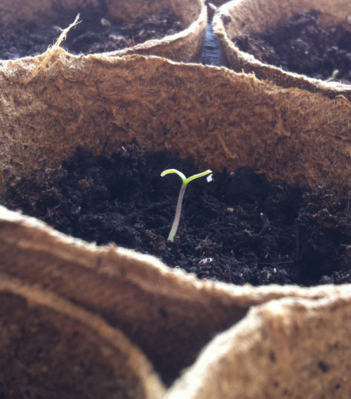

LOS HUERTOS
1 LA UBICACIÓN DEL HUERTO
La mayoría de las plantas hortícolas necesitan sol directo para crecer y desarrollarse correctamente. Otras, agradecen un poco de sombra en las horas punta del día. Crear un plano y marcar en él la exposición solar que tenemos durante el día nos ayudará a distribuir mejor nuestro huerto y a situar las plantas en el espacio que mejor se ajusta a sus necesidades. En esta tabla encontraréis información sobrequé hortalizas toleran mejor una sombra total o parcial.
2 LA TIERRA
Debemos intentar que la tierra donde vamos a cultivar nuestras hortalizas esté suelta, esponjosa y aireada, con una buena capacidad de retención de agua y que contenga todos los nutrientes que las hortalizas van a necesitar para desarrollarse correctamente.
2.1 La tierra en un huerto en macetas
¿Qué sustratos podemos utilizar? La fibra de coco es muy esponjosa y tiene una gran capacidad de retención de agua. Mezclada con los nutrientes que aporta el humus de lombriz se convierte en el sustrato perfecto para un huerto en macetas.
2.2 La tierra en un huerto en el jardín
2.2.1 Posiblemente la tierra contenga poca materia orgánica (abono) para las necesidades de las hortalizas
2.2.2 La tierra puede estar dura y compactada, por lo que debemos airearla y conseguir que sea más esponjosa
En ambos casos podemos solucionar el problema añadiendo compost (abono orgánico) a razón de 10 litros por m2, mezclándolo con los primeros 20 cm de tierra. Una vez mezclado, añadiremos una capa de 2 cm más de compost (unos 20 litros más por metro cuadrado). La aireación de la tierra la conseguiremos labrándola y mezclándola con el compost, quedará más suelta y esponjosa.

3 LOS ABONOS
Todas las plantas necesitan una serie de nutrientes, los macronutrientes son Nitrógeno (N), Fósforo (P), Potasio (K), Magnesio (Mg) y los micronutrientes son Boro (B), Cobre (Cu), Hierro (Fe), Manganeso (Mn), Molibdeno (Mo), Zinc (Zn).